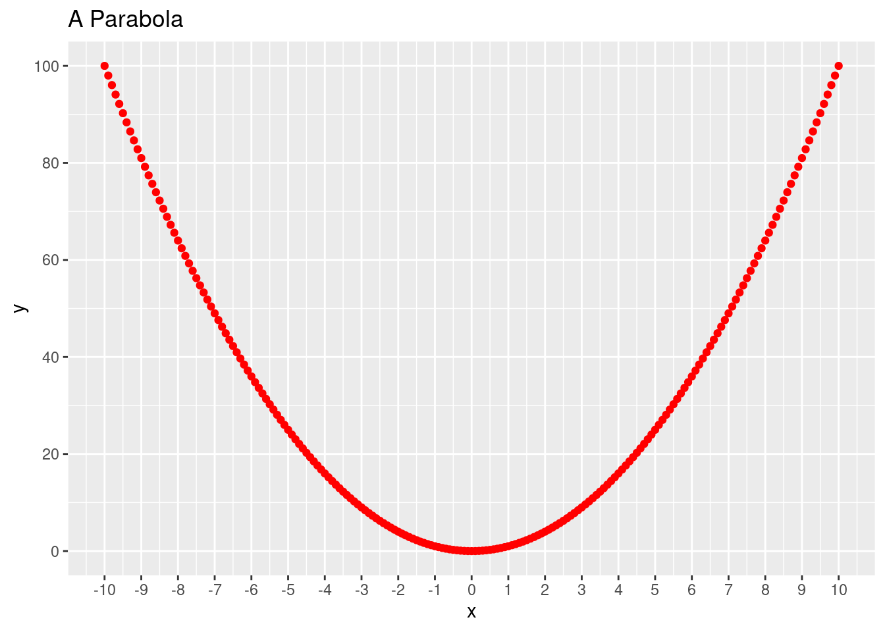
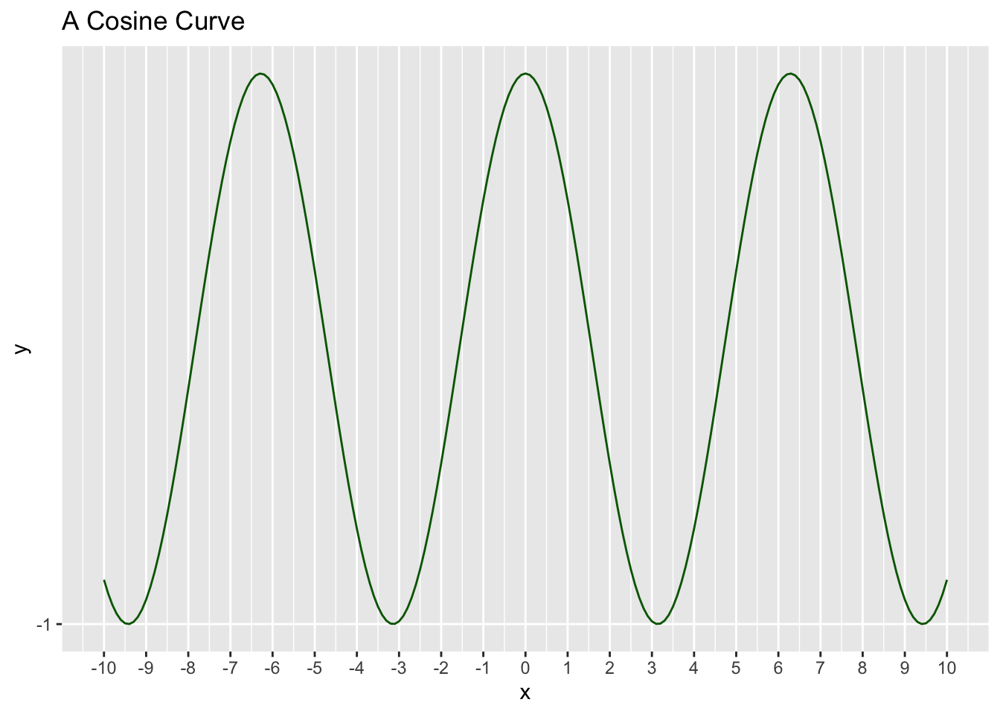

print("Hello World")[1] "Hello World"Fundamentals of Data Science
Start out with a code cell saying “Hello World”
print("Hello World")[1] "Hello World"The cat command is actually probably more useful than print:
cat("hello world")hello worldIn R, the assignment operator is <-, not =. This takes some getting used to.
count <- 5
name <- "Jeremy Teitelbaum" # string types are called chr for character
paragraph <- "Far across the misty mountains cold,
to dungeons deep and caverns cold,
we must away,
ere break of day
to seek our long forgotten gold."
pi <- 3.14159 # R doesn't use integer types unless you force it to, numbers are "num" # nolint: line_length_linter.
epsilon <- 1e-6
count <- 5L # this forces an integer
students <- c("Jeremy", "Phillip", "Sara", "Molly")
hot_dog <- TRUE # note all caps unlike Python; false is FALSEIn R, you can give names to the elements of a vector.
print("hello")[1] "hello"names(students) <- c("President", "Vice President", "Treasurer", "Secretary")
print(names(students))[1] "President" "Vice President" "Treasurer" "Secretary" print(students["President"])President
"Jeremy" print(students) President Vice President Treasurer Secretary
"Jeremy" "Phillip" "Sara" "Molly" The cat command is a print command that “concatenates” its arguments; it needs an explicit newline.
print(students) President Vice President Treasurer Secretary
"Jeremy" "Phillip" "Sara" "Molly" print(count)[1] 5cat("Students:", students, "\n")Students: Jeremy Phillip Sara Molly print(epsilon)[1] 1e-06cat("The value of epsilon is:", epsilon, "\n")The value of epsilon is: 1e-06 print(paragraph)[1] "Far across the misty mountains cold,\nto dungeons deep and caverns cold,\nwe must away,\nere break of day\nto seek our long forgotten gold."cat(paragraph)Far across the misty mountains cold,
to dungeons deep and caverns cold,
we must away,
ere break of day
to seek our long forgotten gold.The [1] at the beginning of each of these things reflects the fact that in R everything is a vector. So it is telling you that the first thing there is element 1 of the vector.
The c() command makes a vector of its arguments. It forces everything to be of the same type.
str_list <- c("Jeremy", 25, 1.34, FALSE) # everything becomes a string
int_list <- c(1, 2, 3, 4, 5)
float_list <- c(1, 2, 3.5, 4)R does all arithmetic on vectors/lists. It one is shorter than the other, it repeats the shorter one, but the length of the longer has to be a multiple of the shorter.
a <- 1
b <- 2
a + b[1] 3a <- c(1, 2, 3, 4, 5)
b <- 4
a + b[1] 5 6 7 8 9a <- c(1, 2, 3, 4, 5, 6)
b <- c(10, 11)
a + b[1] 11 13 13 15 15 17a <- c(1, 2, 3, 4, 5)
b <- c(1, 2)
a + bWarning in a + b: longer object length is not a multiple of shorter object
length[1] 2 4 4 6 6a / 5[1] 0.2 0.4 0.6 0.8 1.0# integer division (// in python)
a <- 5L
b <- 3
a %/% b[1] 1# remainder (% in python)
a <- 5
b <- 3
a %% b[1] 2a <- c(1, 2, 3, 4, 5)
a^2[1] 1 4 9 16 25print(a^2 == a)[1] TRUE FALSE FALSE FALSE FALSEprint(a^2 > a)[1] FALSE TRUE TRUE TRUE TRUEprint(a^2 == 4)[1] FALSE TRUE FALSE FALSE FALSEfirst_name <- "Jeremy"
last_name <- "Teitelbaum"
nchar(first_name)[1] 6paste(first_name, last_name) # spaces by default[1] "Jeremy Teitelbaum"paste(first_name, last_name, sep = "") # no space[1] "JeremyTeitelbaum"paste(c(1, 2, 3), "Jeremy") # remember functions work across vectors[1] "1 Jeremy" "2 Jeremy" "3 Jeremy"In R, you always count from 1 (big difference from python)
first_name[1] # another difference from Python[1] "Jeremy"a <- substr("Jeremy", 1, 1)
b <- substr("Jeremy", 1, 3)
cat(a, b, paste(a, b, sep = ""))J Jer JJernums <- 0:10 # generates a sequence from 0 to 10 INCLUSIVE (compare python)
print(nums) [1] 0 1 2 3 4 5 6 7 8 9 10print(nums[c(1, 3)]) # you can pass a list of indices to a subscript[1] 0 2sqrs <- nums^2
sqrs[seq(1, 10, 2)][1] 0 4 16 36 64In R, negative numbers in seq mean “omit” so this means omit entries 2 through 5. You can’t mix positive and negative numbers
rev <- nums[seq(-2, -5)]
print(rev)[1] 0 5 6 7 8 9 10rev(nums) # reverses the list [1] 10 9 8 7 6 5 4 3 2 1 0Use the Rstudio package manager to add libraries to your installation, but to use them you need to use the library function. The tidyverse library is something we will use a lot.
library(tidyverse)── Attaching core tidyverse packages ──────────────────────── tidyverse 2.0.0 ──
✔ dplyr 1.1.1 ✔ readr 2.1.4
✔ forcats 1.0.0 ✔ stringr 1.5.0
✔ ggplot2 3.4.3 ✔ tibble 3.2.1
✔ lubridate 1.9.2 ✔ tidyr 1.3.0
✔ purrr 1.0.1
── Conflicts ────────────────────────────────────────── tidyverse_conflicts() ──
✖ dplyr::filter() masks stats::filter()
✖ dplyr::lag() masks stats::lag()
ℹ Use the conflicted package (<http://conflicted.r-lib.org/>) to force all conflicts to become errorslibrary(ggplot2)x <- seq(-10, 10, .1)
y <- x**2
data <- tibble("x" = x, "y" = y)ggplot(data = data, aes(x = x)) +
geom_point(aes(y = y), color = "red") +
ggtitle("A Parabola") +
scale_x_continuous(breaks = seq(-10, 10, 1)) +
scale_y_continuous(breaks = seq(0, 100, 20))
x <- seq(-10, 10, .1)
y <- cos(x)
data <- tibble("x" = x, "y" = y)
ggplot(data = data, aes(x = x)) +
geom_line(aes(y = y), color = "darkgreen") +
ggtitle("A Cosine Curve") +
scale_x_continuous(breaks = seq(-10, 10, 1)) +
scale_y_continuous(breaks = seq(-1, 1, 5))